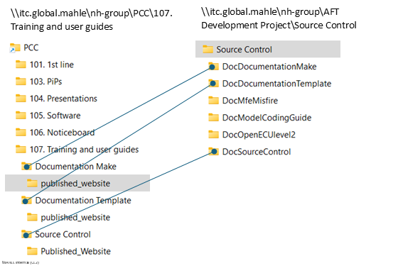

discussion
Folder Locations
2025 03Mar 24 - GK - Repos for document sources are grouped together using the prefix "Doc" but the published folder naming is not grouped. From the perspective of a novice the lack of symmetry makes the relationships harder to understand and is a possible factor in reducing the likelihood that potential wiki-contributers will persevere with tentative attempts at joining the party. Would it be better to somehow group the published folder naming in a similar way to the source folders ? Basing the published folder naming directly on the repo folder names would be a bad idea because those names are uncontrolled (i.e. authors are free to choose their own local repo folder names). Perhaps we could tie it all together and coordinate the folder naming through entries in the Discover utility ? Folder Locations - responses
2025 03Mar 27 - MU - I see the issue. ‘Training and user guides’ (in my view) should be a list of helpful training material with titles in plain English. So ‘Source Control’ is a helpful name for the ‘Source Control’ documentation.
Whereas, in AFT Development Project/Source Control – this is now a massive directory of all remote repos, hence the need to separate documentation repos from software or other repos. Ultimately, the copy_published_site_to_server.bat will tell you where the published files are….perhaps we should include the remote repo location within the website docs also – so they both point at eachother.
2025 04Apr 10 - GK - Yes I see your argument too but I think the combination of not only there being such a fundamental difference between the MkDocs training material and all the other non-MkDocs training material, but also there being a one-to-one correspondence between all the grouped docs repos and all the published training folders, justifies a visual grouping of the published training folders together on their own, rather than having them interspersed.
mkdocs - special items in collapsible sections ?
2025 03Mar 24 - GK - mkdocs appears to not support having various special items in collapsible sectionse.g. double-space newlines, lists, hyperlinks, etc.
Is there a way around this ?
mkdocs - special items in collapsible sections responses
2025 03Mar 27 - MU - You're not using Material for Mkdocs syntax. Please see our guide and the Material Help also.
2025 04Apr 10 - GK - OK thanks yes I see what you mean. The issues I asked about do all now work above in "collapsible sections 2"
mkdocs - robust links ?
2025 03Mar 24 - GK - When creating links from one doc page to another page, possibly in another repo, how can we protect against the link breaking if(/when) the destination page moves. This is something we've noted is handled well in Obsidian/Dendron.Maybe we could use links like this :
example of link source (name = "myLinkText" and id="8490aaeb...")
This link to myLinkText - source works inside collapsible section.
<a href="issues2.html#8490aaeb-a6d0-40f8-93d9-cc5296106e8c">myLinkText - source</a>
This link to myLinkText- source only works outside collapsible section.
[myLinkText- source](issues2.md#8490aaeb-a6d0-40f8-93d9-cc5296106e8c)
mkdocs - robust links - responses
2025 03Mar 27 - MU - Something like this would be useful as discussed. But I think it's an additional tool we/someone needs to write.
bat files ?
2025 03Mar 25 - GK - What do the following two files add ?
rebuild_site.bat just runs "mkdocs build"
launch_site_preview.bat just runs "mkdocs serve"
These two files obscure the role of the mkdocs engine and effectively repackage a well documented command line interface behind an undocumented batch file interface.
They also run in a hidden command shell which makes the info returned by mkdocs inaccessible.
I propose we consider dropping the bat files and simply explaining to the user how the nice simple mkdocs CLI works.
bat files - responses
2025 03Mar 27 - MU - These are really useful. If you're working with these docs regularly, I find these shortcuts (bat files) really speed things up.
2025 04Apr 10 - GK - OK sorry, on reflection it was wrong to suggest dropping something people are finding useful. The usefulness, however, is increased if the repackaging role of the bat files is transparent and the existence of the simple underlying commands is made obvious. The new QuickStart page takes care of this.
Quick Start
2025 03Mar 24 - GK - Could do with some simple quickstart instructions to minimise the barrier for engineers jumping straight into editing interactive docs. Important to use virtual environments to eliminate risk of side effects and allow quickstart to be reliably undone. Something along the lines of the following list :1. (once only) clone a documentation repo
2. (once only) install mkdocs into a new python venv
3. activate the python venv
e.g. C:> "C:\Users\kennedgo\Documents\mypython7\.venv\Scripts\activate.bat"
4. run python command "mkdocs serve"
e.g. (.venv) C:> cd "C:\Local Copy\DocSourceControl\Controlled"
(.venv) C:> mkdocs serve
5. open locally served document
6. (optional) delete the venv
7. (optional) delete the clone
Quick Start responses
2025 03Mar 27 - MU - Well catered for in C&C Documentation Guide and C&C Documentation Template already.
2025 04Apr 09 - GK - Yes, Robert's nice documentation guide did cater well in helping me to get started. During that experience, however, I spotted some opportunities to lower the barrier. I think these session steps might help us and they also use virtual environments which I think we agreed would be a good idea. There are still some gaps and bits which need tweaking but there's enough to convey the main idea (and to help me switch quickly into mkdoc action on demand).